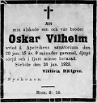

Oskar Vilhelm Hällgren
Blev 15 år.
| Född: | 1912-04-06 Stenbrånet 1, Norsjö fs, Norsjö sn. [1] | |
|---|
| Död: | 1928-01-20 Sörböle 2, Skellefteå lfs, Skellefteå sn. Dödsorsak: Lungsot. [2] | På Apelvikens sanatorium, Varberg. |
|---|
| Begravd: | 1928-01-28 Apelvikens kyrkogård, Varberg. [3] | |
|---|
Personhistoria
| Årtal | Ålder | Händelse |
|---|
| 1912 |
|
Födelse 1912-04-06 Stenbrånet 1, Norsjö fs, Norsjö sn [1] |
| 1913 |
1 år |
Systern Ingrid Maria Hällgren föds 1913-11-26 Stenbrånet 1, Bastuträsk kbfd, Norsjö sn [4] |
| 1916 |
3 år |
Brodern Gustaf Arnold Hällgren föds 1916-02-27 Stenbrånet 1, Bastuträsk kbfd, Norsjö sn [4] |
| 1917 |
5 år |
Brodern Sten Ingvar Hällgren föds 1917-09-20 Stenbrånet 1, Bastuträsk kbfd, Norsjö sn [4] |
| 1920 |
8 år |
Systern Vera Amalia Hällgren föds 1920-07-17 Sörböle 2, Skellefteå lfs, Skellefteå sn [5] |
| 1923 |
10 år |
Systern Gerda Viktoria Hällgren föds 1923-01-13 Sörböle 2, Skellefteå lfs, Skellefteå sn [5] |
| 1924 |
12 år |
Fadern Olof Sten Olofsson Hällgren dör 1924-10-18 Sörböle 2, Skellefteå lfs, Skellefteå sn [6] |
| 1928 |
15 år |
Död 1928-01-20 Sörböle 2, Skellefteå lfs, Skellefteå sn [2] |
| 1928 |
|
Begravning 1928-01-28 Apelvikens kyrkogård, Varberg [3] |
Källor
| [1] | Norsjö (AC) AIIa:4 (1900-1912) Bild 1190 / sid 109 |
| |
| | |
| [2] | Skellefteå landsförsamling (AC) F:8 (1921-1935) Bild 2060, AIIa:22 (1912-1926) 11/1928 Bild 1490 / sid 143 |
| |
| | |
| [3] | Skellefteå landsförsamling (AC) F:8 (1921-1935) 11/1928 Bild 2060 |
| |
| | |
| [4] | Bastuträsks kbfd (AC) AIIa:1 (1912-1928) Bild 2830 / sid 975 |
| |
| | |
| [5] | Skellefteå landsförsamling (AC) AIIa:22 (1912-1926) Bild 1490 / sid 143 |
| |
| | |
| [6] | Skellefteå landsförsamling (AC) F:8 (1921-1935) 272/1924 Bild 1150, AIIa:22 (1912-1926) Bild 1490 / sid 143 |
| |
|
|  |
| 1928-01-24. Norra Västerbotten. |
|
{kind=link}